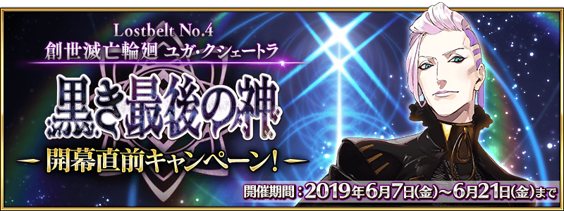
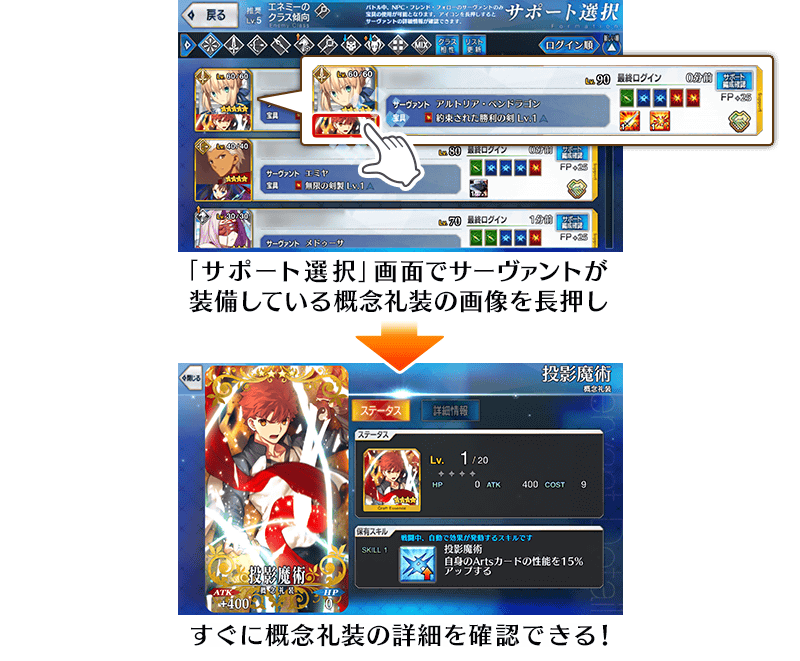
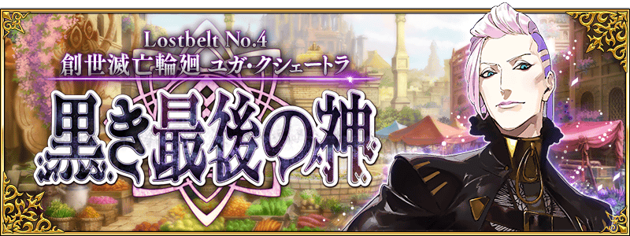
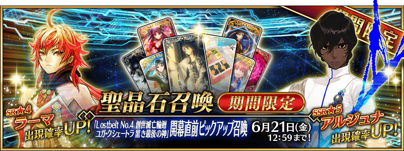

舉辦主線關卡第2部 第4章「Lostbelt No.4 創世滅亡輪廻 宇迦淨土 黑色最終之神」的開幕前夕宣傳活動！
※本頁面皆為開發中圖片。會有與實際圖片相異的情況。
◆舉辦期間◆
2019年6月7日(五) 17:00～6月21日(五) 11:59

下述的期間中，在「御主任務」的「限定」標籤內以期間限定追加「【第2部 第4章開幕前夕】任務」。
通過主線關卡第2部 第3章「Lostbelt No.3 人智統合真國 SIN 紅之月下美人」的話，可得到聖晶石10個！
※已通過主線關卡的玩家也能同様地領取通過報酬。

◆舉辦期間◆
2019年6月7日(五) 17:00～6月21日(五) 11:59
◆領取期間◆
2019年6月7日(五) 17:00～6月28日(五) 11:59
◆追加任務◆
| 任務名稱 | 任務達成報酬 |
|---|---|
| 【第2部 第4章開幕前夕】 通過Lostbelt No.3 | 聖晶石 10個 |
※請注意舉辦期間與領取期間相異。 ※請注意與每週日23:00更新的普通任務(Weekly)不同欄位，超過領取期間的話無法入手報酬。 ※就算通過「【第2部 第4章開幕前夕】通過Lostbelt No.3」，也不會計算在普通任務(Weekly)的任務進行度。 ※根據主線關卡的進行度會有無法達成「【第2部 第4章開幕前夕】任務」的情況。
在目前永久舉辦的AP消耗量1/2狀態，再追加AP消耗量1/2，主線關卡第1部(從特異點F到終局特異點)的主線關卡AP消耗量以期間限定變成1/4！
尚未通過主線關卡第1部的御主，請務必藉此通過至挑戰終局特異點吧！
◆舉辦期間◆
2019年6月7日(五) 17:00～6月21日(五) 11:59
◆對象關卡◆
主線關卡第1部(從特異點F到終局特異點)
※請注意第1部的自由關卡為對象外。 ※就算在戰鬥中撤退的情況，AP的消耗仍是1/4。
主線關卡第2部(從Lostbelt No.1到Lostbelt No.3)的AP消耗量以期間限定變成1/2！
尚未通過主線關卡第2部的御主，請務必藉此通過至「Lostbelt No.3 人智統合真國 SIN 紅之月下美人」吧！
◆舉辦期間◆
2019年6月7日(五) 17:00～6月21日(五) 11:59
◆對象關卡◆
主線關卡第2部(從Lostbelt No.1到Lostbelt No.3)
※就算在戰鬥中撤退的情況，AP的消耗仍是1/2。
下述的期間中，通過主線關卡第2部 第3章「Lostbelt No.3 人智統合真國 SIN 紅之月下美人」的話，第2部(從Lostbelt No.1到Lostbelt No.3)自由關卡初次通過前的AP消耗量以期間限定變成1/2！
於主線關卡第2部 第1章～第3章尚未通過殘有對象自由關卡的御主，請務必藉此機會通過吧！
◆舉辦期間◆
2019年6月7日(五) 17:00～6月14日(五) 11:59
◆宣傳活動對象◆
通過主線關卡第2部 第3章「Lostbelt No.3 人智統合真國 SIN 紅之月下美人」的御主對象
※不需要通過亞種特異點(從Ⅰ到Ⅳ)。
◆對象關卡◆
第2部(從Lostbelt No.1到Lostbelt No.3)的自由關卡
※初次通過是指初次入手通過報酬的時間點前。 ※就算在戰鬥中撤退的情況，關卡初次通過前AP的消耗仍是1/2。
介紹6月7日(五)更新追加的新功能。
◆追加時間◆
2019年6月7日(五) 17:00～
於「支援選擇」畫面變得能確認從者裝備的概念禮裝詳情！
在關卡開始前的「支援選擇」畫面中，變得可確認從者裝備的概念禮裝詳情。

關於主線關卡第2部 第4章「Lostbelt No.4 創世滅亡輪廻 宇迦淨土 黑色最終之神」和期間限定『「Lostbelt No.4 創世滅亡輪廻 宇迦淨土 黑色最終之神」開幕前夕Pick Up召喚』的詳情，請自下述的橫幅確認。
■「Lostbelt No.4 創世滅亡輪廻 宇迦淨土 黑色最終之神」詳細情報

■『「Lostbelt No.4 創世滅亡輪廻 宇迦淨土 黑色最終之神」開幕前夕Pick Up召喚』詳細情報
